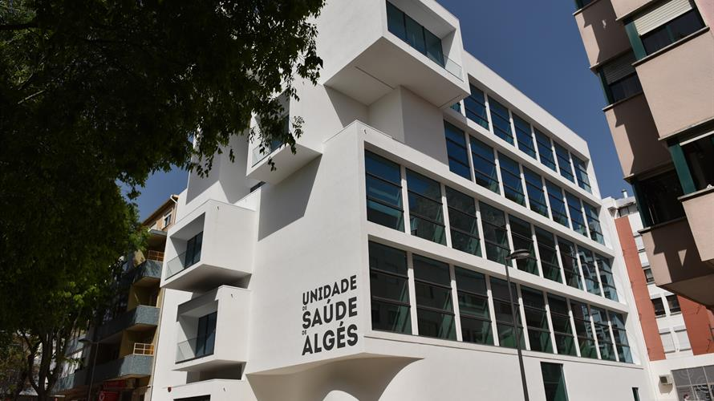

Quem Somos
Somos uma equipa constituída por Médicos de Família, Enfermeiros, Secretários Clínicos, Assistente Operacional, Internos de Especialidade de Medicina Geral e Familiar, alunos de Medicina e Enfermagem, motivados para o servir melhor. Atuamos em colaboração com as estruturas da comunidade.